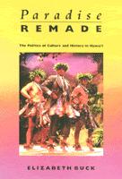

A rereading of Hawaiian history
A rereading of Hawaiian history


 A rereading of Hawaiian history
A rereading of Hawaiian history

|  |
Paradise RemadeThe Politics of Culture and History in Hawai'iElizabeth Buckpaper EAN: 978-1-56639-200-6 (ISBN: 1-56639-200-4) |
"[A] thought provoking account of the history of Hawai'i's indigenous people.... [Buck] examines the transformations of successive social structures and the various relationships of power and domination in Hawaiian history before and after contact with the West. Buck uses the changing contexts of the production, practice and meaning of the chant and hula, and the later emergence of Hawaiian music, to inform our understanding of the cultural and social implication of political and economic change.... Well worth reading."
—Journal of American History
This is a book about the politics of competing cultures and myths in a colonized nation. Elizabeth Buck considers the transformation of Hawaiian culture focusing on the indigenous population rather than on the colonizers. She describes how Hawaii's established religious, social, political, and economic relationships have changed in the past 200 years as a result of Western imperialism. Her account is particularly timely in light of the current Hawaiian demands for sovereignty 100 years after the overthrow of the monarchy in 1893.
Buck examines the social transformation Hawaii from a complex hierarchical, oral society to an American state dominated by corporate tourism and its myths of paradise. She pays particular attention to the ways contemporary Hawaiians are challenging the use of their traditions as the basis for exoticized entertainment.
Buck demonstrates that sacred chants and hula were an integral part of Hawaiian social life; as the repository of the people's historical memory, chants and hula practices played a vital role in maintaining the links between religious, political, and economic relationships. Tracing the ways in which Hawaiian culture has been variously suppressed and constructed by Western explorers, New England missionaries, the tourist industry, ethnomusicologists, and contemporary Hawaiians, Buck offers a fascinating "rereading" of Hawaiian history.
"Buck has written an exemplary theoretical meditation on the politics of cutlure and of history, embedded in a richly nuanced and evocative study of Hawai'i's past."
—American Studies
"Betty Buck has a rare gift. She reads, understands, and processes a wide array of political, philosophical, and literary theory well enough to apply the ideas to specific cases, phenomena, or processes and to ask questions of that material that less theoretically informed researchers are far less likely to find interesting, or to even ask."
—Virginia R. Dominguez, University of California, Santa-Cruz
1. Introduction
Competing Myths of Hawai'I •
History and the Politics of Culture •
Hawaiian Historiography
2. Thinking about Hawaiian History
Conceptualizing Structural Change: Marxist Perspectives •
Language and Power: Poststructuralist Perspectives •
3. Hawai'i before Contact with the West •
The Hawaiian Social Structure •
Ideological Reproduction •
Chant and Hula: At the Ideological Center •
Structure and Change before Contact
4. Western Penetration and Structural Transformation
The Penetration of Capitalism •
Transformation to Capitalism: The Mahele •
The New Political-Economy of Sugar •
Hawaiian Sovereignty at Risk
5. Transformations in Ideological Representations: Chant and Hula
Cultural Interaction in Hawai'I •
The Intrusion of Western Culture •
Changes in Hawaiian Chant and Hula •
New Forms of Hawaiian Music •
Music and Resistance
6. Transformations in Language and Power
The Movement from Orality to Literacy •
The Power of Writing •
The Displacement of Hawaiian by English •
Discourses about Chang and Hula
7. Contending Representations of Hawaiian Culture
The Political-Economy of Hawai'i in the Twentieth Century •
Hawaiian Music and the Industries of Culture •
Tourism and Paradise: Appropriating Hawaiian Culture •
The Politics of Culture—Hawai'i Style •
Hawaiians and the Politics of Culture
Notes
Glossary
Index
Elizabeth Buck is a Fellow at the East-West Center in Honolulu, Hawai'i.
© 2015 Temple University. All Rights Reserved. This page: http://www.temple.edu/tempress/titles/777_reg.html.